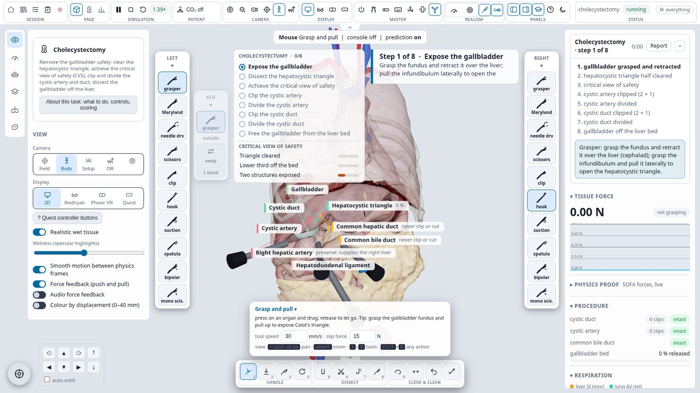

Streaming and XR
On a capable computer the browser draws the scene from the physics frames. A weak device (a phone, a tablet, a headset) is streamed instead: the view is rendered on the server's GPU and the device only decodes video and sends its input back.

Two ways to stream
Server page
A headless Chromium page on the server GPU renders the same page the desktop gets, with the full tissue look and the teaching layer. Pointer, wheel and keys over the device's view are injected into it as real input; panel actions are replayed there. Video goes out over WebRTC, or as H.264 chunks over the page's WebSocket where WebRTC cannot connect.
Native GPU view
A separate process renders with EGL and hands the image to NVIDIA's encoder through CUDA-GL interop, so the frames never leave the GPU between render and encoder. The device draws the 2D teaching layer over the video itself.
Flow control
- Newest wins: a late frame is useless, so the server encodes no new frame while the oldest unacknowledged one is older than the link's minimum round trip plus 80 ms.
- The bitrate adapts between 0.3 and 6 Mbit/s; key frames on request and about every 10 s.
- A waiting mouse move is replaced by the newest one; presses, releases and keys are never dropped.
- Outside the local network a TURN relay helps WebRTC through NAT; it relays only to the simulator's machine.
Measured
| What | Result |
|---|---|
| Key to photon, same machine | 12–37 ms |
| Phone over the internet | about 57–60 fps at 5 Mbit/s |
| Touch to instrument on a phone (screen recordings) | median 148 ms over home Wi-Fi, 199 ms over mobile data and a VPN |
XR
WebXR headsets work in both modes; in headset VR the page renders locally, because head motion needs under 20 ms. XR controllers can act as the robot's masters.